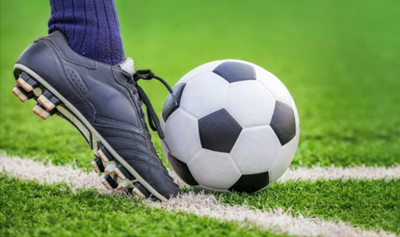
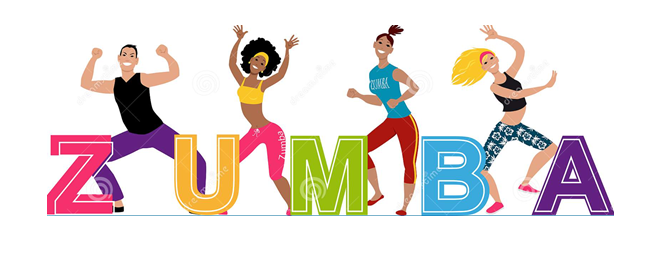
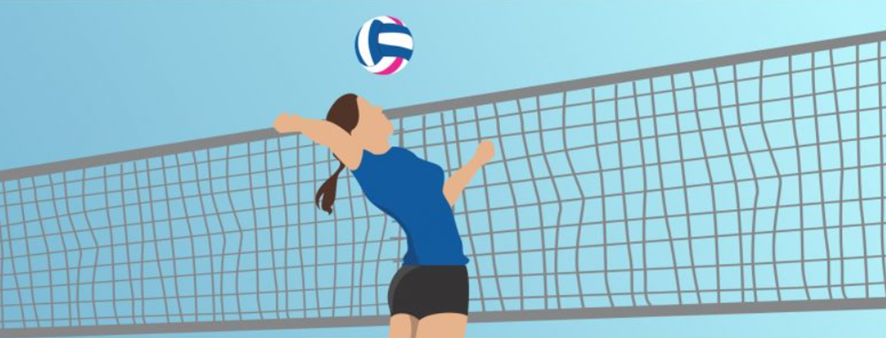
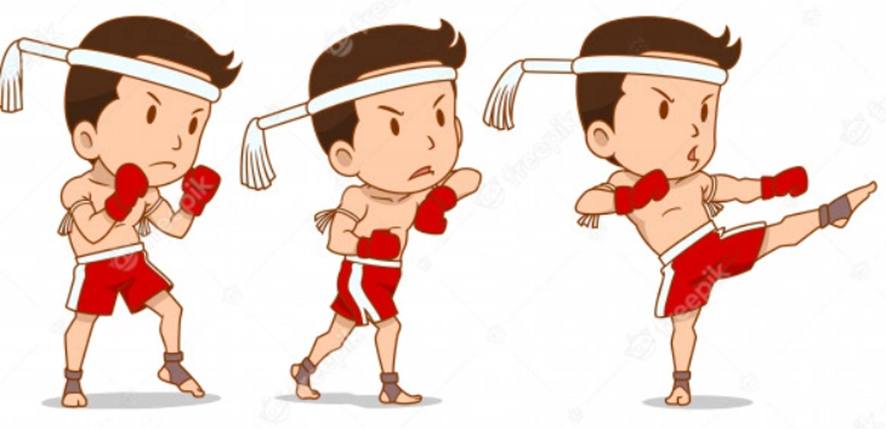
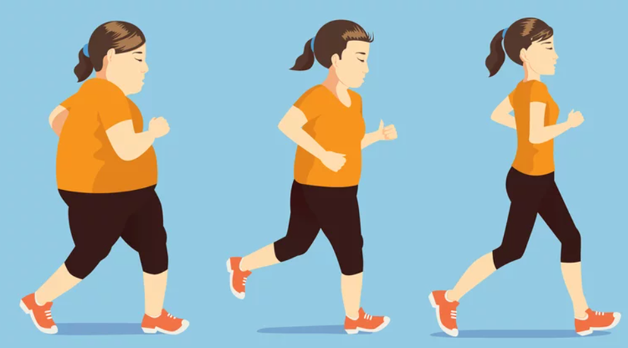

Esportes
Dicas de esportes e seus benefícios
FUTEBOL

Praticar o futebol é um dos principais esportes para manter o condicionamento físico em dia,
além de trabalhar vários músculos do corpo, ele diminui o estresse e aumenta a auto confiança e auto estima.
ZUMBA

Zumba é outro esporte super importante, porém, nele é utilizada a dança que traz como benefícios um bom gasto
calórico e aumenta a velocidade do metabolismo corporal e ela deixa a pessoal com um astral positivo.
VÔLEI

Um mega esporte para as pessoas que querem desenvolver o trabalho em equipe, pois precisa estudar as
jogadas dos adversários e traz com ele o benefício de ter mais reflexo e trabalha membros superiores e inferiores.
Com todos esses atributos a pessoal tem uma sensação de mais qualidade de vida.
MUAY THAI

Não apenas o Muay Thai, mas como outros esporte de luta, trazem ótimos benefícios para o corpo,
como o fortalecimento dos músculos, desenvolve o contorno corporal (o famoso abdômen definido) e
com isso acaba perdendo muita gordura localizada, sendo assim a pessoa se sente mais realizada e confortável.
CAMINHADA

Quero deixar como dica a caminhada para quem não tem muito tempo para poder praticar esportes,
ela é uma boa opção, pois você pode fazê-la pela manhã, tarde ou noite. E traz como benefícios a
sensação de bem-estar e mantém o peso em equilíbrio ou perde peso.